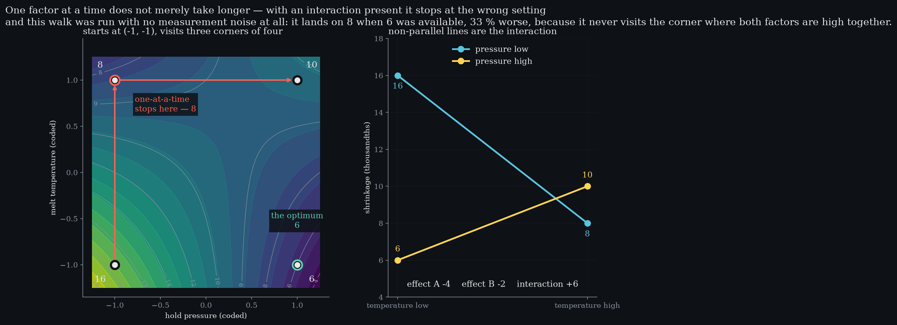
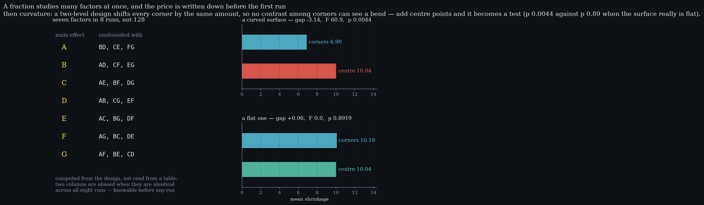

Level 12 · chapter twelve
Experiments
The last level. Change the settings on purpose — and discover that studying one factor at a time can lead you confidently to the wrong answer.
after Level 11 — relationships, and the seam to MSA·leads to nothing — this is where the arc closes
- 12.1Changing things on purposeone term in the model is the whole subject
- 12.2One factor at a time, with perfect measurementsit stops at the wrong corner, and noise is not the reason
- 12.3The interaction it cannot estimateunidentifiable, which is stronger than imprecise
- 12.4Screening: width, bought with aliasingseven factors in eight runs, and the price as a table
- 12.5Curvature, and why the corners cannot see itthe bend is constant across corners, not absent
- 12.6Twelve levelswhat the arc was for
Changing things on purpose
Every level so far watched a process, or described data that arrived on its own. the last levelEleven levels of listening. This one asks.This one changes the settings deliberately, and the whole subject turns on a single fact that is easy to state and easy to ignore.
The fourth term is the whole subject. Set it to zero and one factor at a time works perfectly well, if slowly. Let it be larger than a main effect and the procedure stops at the wrong corner — with no noise required.
If two factors interact — if what the second one does depends on where the first one is set — then studying them one at a time can lead you confidently to the wrong setting. the conditionAn interaction larger than a main effect. Below that, one-at-a-time is merely slow.Not slowly. Wrongly.
One factor at a time, with perfect measurements
Hold pressure and melt temperature, two levels each, shrinkage as the response and lower is better. true shrinkage at the four cornerspressure -1, temp -116pressure -1, temp +18pressure +1, temp -16pressure +1, temp +110The classic procedure: start with everything low, tune the second factor, fix it, tune the first.
Run it with no measurement noise whatsoever — every reading exactly the true value — and it stops at 8 when 6 was available. one at a time, noise-freestops at8optimum6shortfall2corners visited3 of 4That is 33 % worse, and it cannot be blamed on sampling error because there is none.
The reason is visible once it is drawn: the procedure never visits the corner where both factors are set high together, so the setting that wins is one it never tries.spoken plainlyIt is not a search that stopped early. It is a search that cannot reach the answer.

The interaction it cannot estimate
An interaction is a difference of differences: what the temperature does at high pressure, minus what it does at low pressure. from the full factorialeffect A-4effect B-2interaction AB+6That needs all four corners, and one at a time visits three.
So the interaction here — +6, larger than either main effect — is not estimated badly by the one-at-a-time runs. not a precision problemUnidentifiable, which is a stronger statement than imprecise.It is not estimable from them at all. The factorial gets it from the same number of runs, because a factorial spends its runs on corners rather than on paths.
And the same design is more precise about the main effects too. s.d. of the effect, 16 runsfactorial0.225one at a time0.320ratio×1.42Every run contributes to every effect — the hidden replication — so on 16 runs the factorial's estimate of the pressure effect has a standard deviation of 0.225 against 0.320 for the comparison it replaces.
- One at a time stops at
- —
- The optimum
- —
- Shortfall
- —
No noise at all: every value here is the true response.
Set the interaction to zero and one factor at a time never fails. The
arithmetic is the same as spclab.experiments.
Drag the interaction to zero and the procedure never fails — which is the honest version of the claim. why that mattersThe condition for the method to work is the thing the method cannot check.One at a time is not wrong in general; it is wrong exactly when factors interact, and you cannot know whether they do without a design that could have told you.
Screening: width, bought with aliasing
With seven factors a full factorial is 128 runs. confounded withmain effect ABD, CE, FGmain effect BAD, CF, EGmain effect CAE, BF, DGmain effect DAB, CG, EFA sixteenth-fraction does it in 8, and the price is not vague — it is a table you can write down before the first run.
Each main effect is confounded with a set of two-factor interactions: the columns are literally identical across the eight runs, so no arithmetic can separate them. the dealScreening finds which factors matter. It cannot also tell you how they interact — that is the next experiment.That is what resolution means, and it is computed from the design's generators rather than looked up.
Which is the right trade at the start of an investigation and the wrong one at the end. Screen wide and cheap, then spend the second experiment on the two or three factors that survived.
Curvature, and why the corners cannot see it
A two-level design fits a plane with a twist in it. a surface that really bendscorners6.90centre10.04gap-3.14p0.0044If the true surface bends, the corners cannot report it — and the reason is sharper than it first looks.
With coded ±1 factors the quadratic term contributes the same amount at every corner and nothing at the centre. the testA few runs at the middle, and the gap between the corner mean and the centre mean is a pure quadratic signal.So it is not absent from the corner readings — it is constant across them, which makes it inseparable from the intercept. Every effect estimate comes out unchanged.
Add centre points and it becomes a test. and it does not cry curvatureflat surface gap+0.06its p0.89On the bent surface the gap is -3.14 with p = 0.0044; on a genuinely flat one it is +0.06 with p = 0.89. The design does not merely estimate better — it can now be wrong out loud, which is the property Level 7 spent its whole length arguing for.

Twelve levels
That closes the arc. the ruleNo number on this site is asserted. Every constant is computed at render time and the tests check the same functions.Twelve levels, and the thread through all of them is that every number on a chart is the result of an argument that can be reconstructed — so none of them has to be taken on faith.
Variation, chance, centre and spread, the predictable average, estimation. where it goes nextLevel 11 hands measurement systems to their own site. Nothing here needed a citation to be believed.Then limits as a bet, evidence as a trade, capability, detection. Then counting rather than measuring, relationships, and experiments. Each level ends by raising the question the next one answers, which is the only structure the whole thing has.